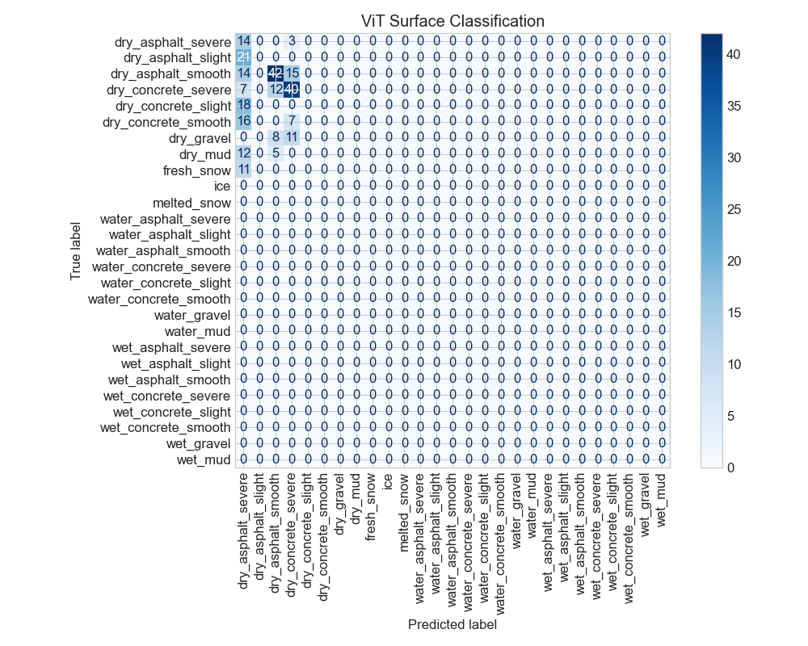

Comprehensive Project Report
Generated: 2026-07-11 11:33:56
Project: Intelligent Multi-Modal Braking System for Autonomous and ADAS Applications
This report summarizes the development and evaluation of an intelligent multi-modal braking system for autonomous vehicles and ADAS applications.
The system integrates:
Key Achievements:
Detailed dataset analysis is available in the separate report.
Training history not available. Run python scripts/train.py to train models.

Simulation results not available. Run python scripts/simulate.py to generate.
intelligent_braking_system/
├── configs/
│ ├── vit_config.yaml
│ ├── temporal_config.yaml
│ ├── fusion_config.yaml
│ ├── pinn_config.yaml
│ └── control_config.yaml
├── data/
│ ├── external/
│ │ ├── thu_road_surface/
│ │ └── mendeley_vehicle/
│ └── processed/
├── models/
│ ├── vit.py
│ ├── temporal_network.py
│ ├── fusion_network.py
│ ├── pinn.py
│ ├── sac_agent.py
│ └── mpc_controller.py
├── utils/
│ ├── __init__.py
│ ├── preprocessing.py
│ ├── physics.py
│ ├── can_bus.py
│ ├── visualization.py
│ └── metrics.py
├── scripts/
│ ├── setup.py
│ ├── download_datasets.py
│ ├── analyze_datasets.py
│ ├── preprocess_data.py
│ ├── train.py
│ ├── evaluate.py
│ ├── simulate.py
│ └── report.py
├── output/
│ ├── models/
│ ├── plots/
│ ├── metrics/
│ └── reports/
└── results/
All configuration files are available in the configs/ directory.
See requirements.txt for all Python dependencies.